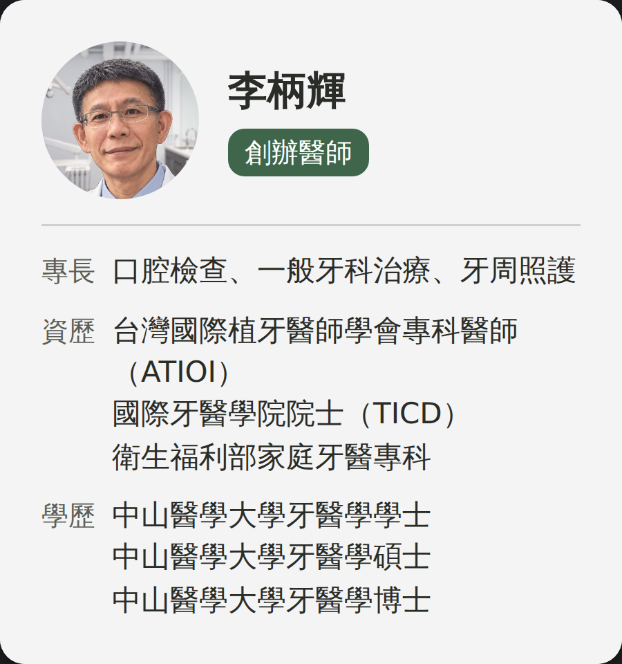
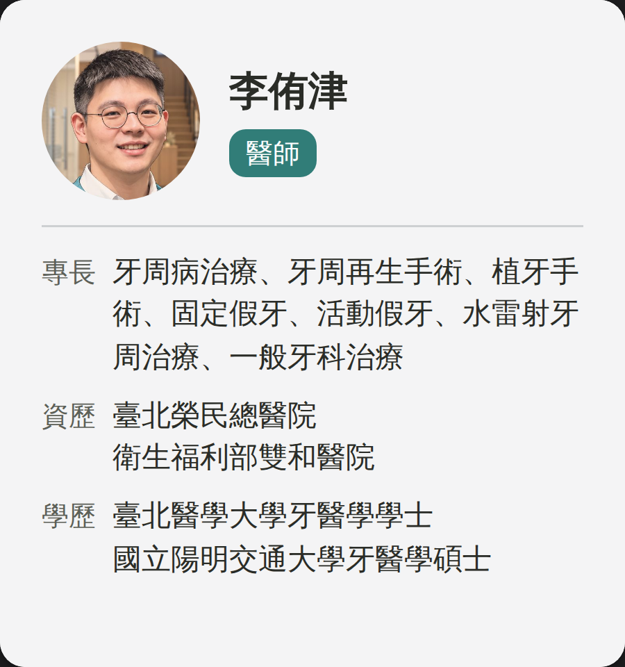
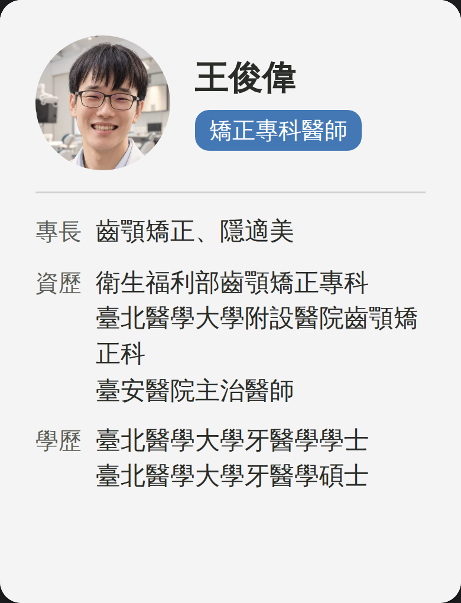
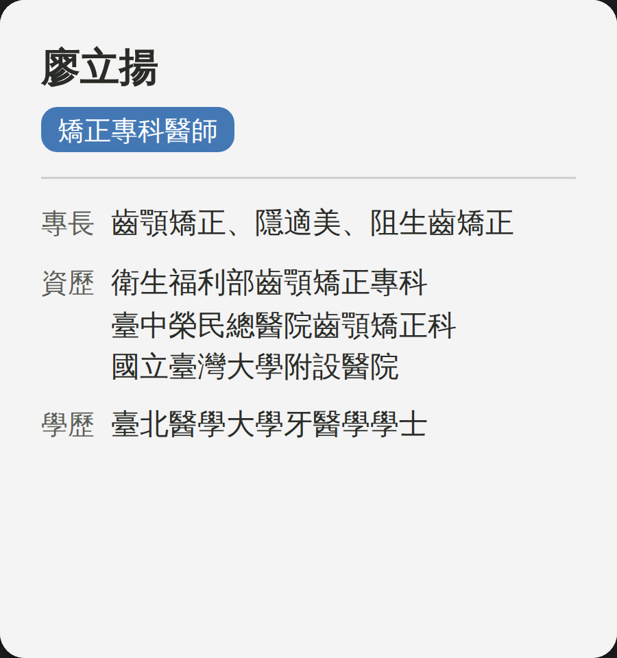
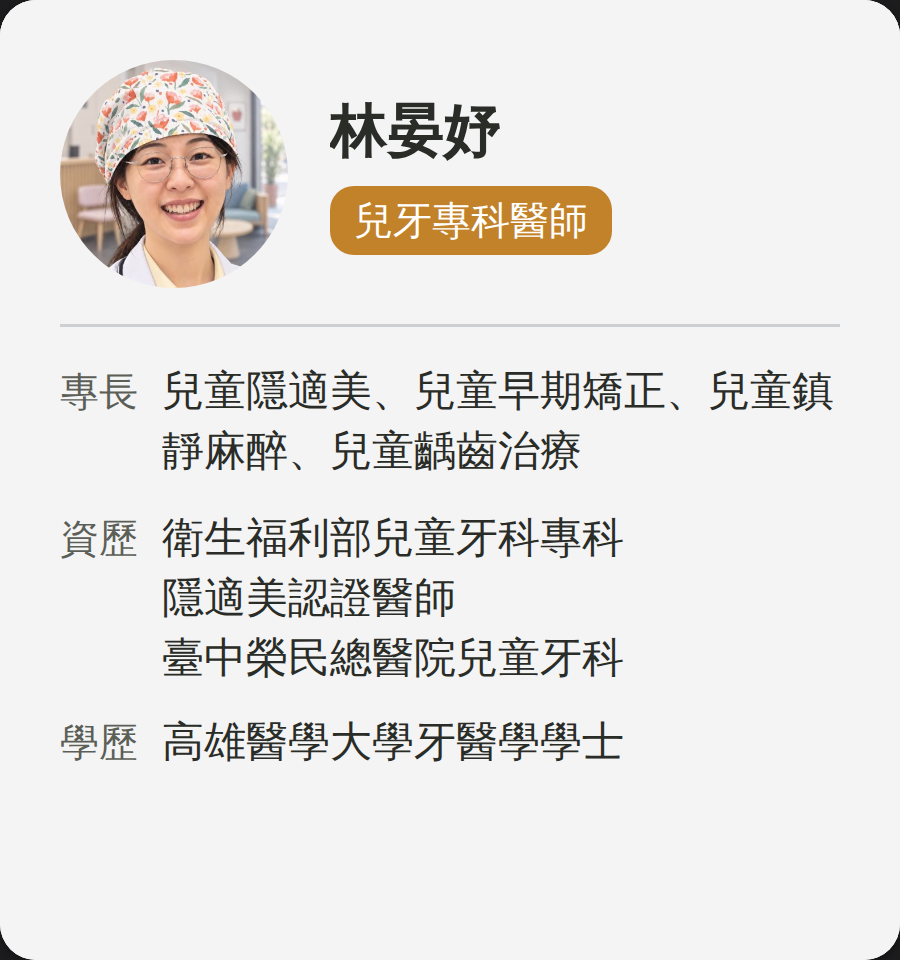
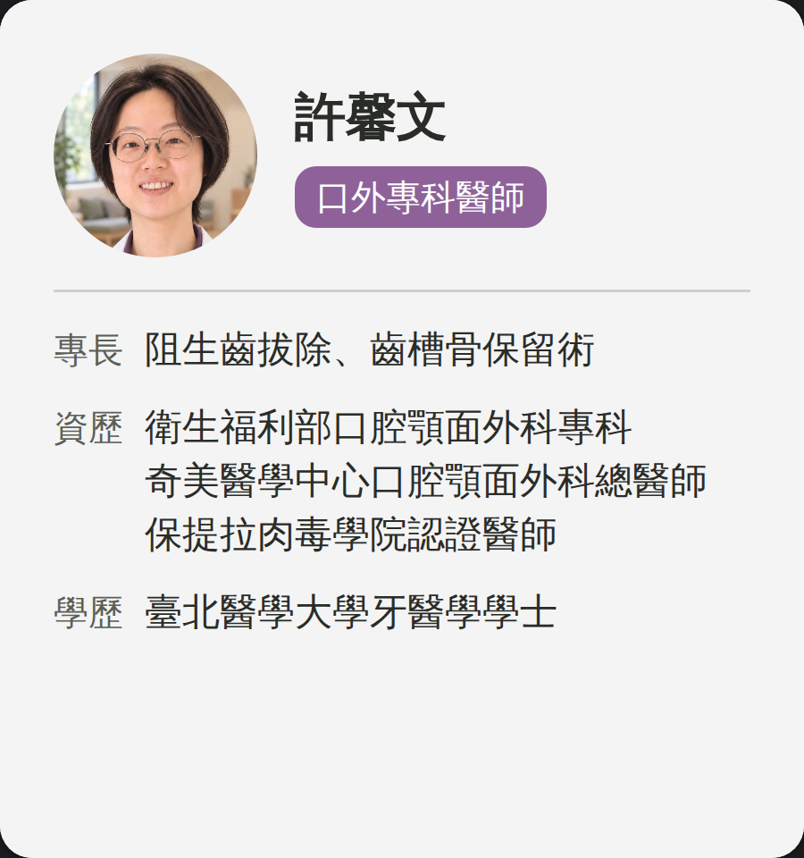
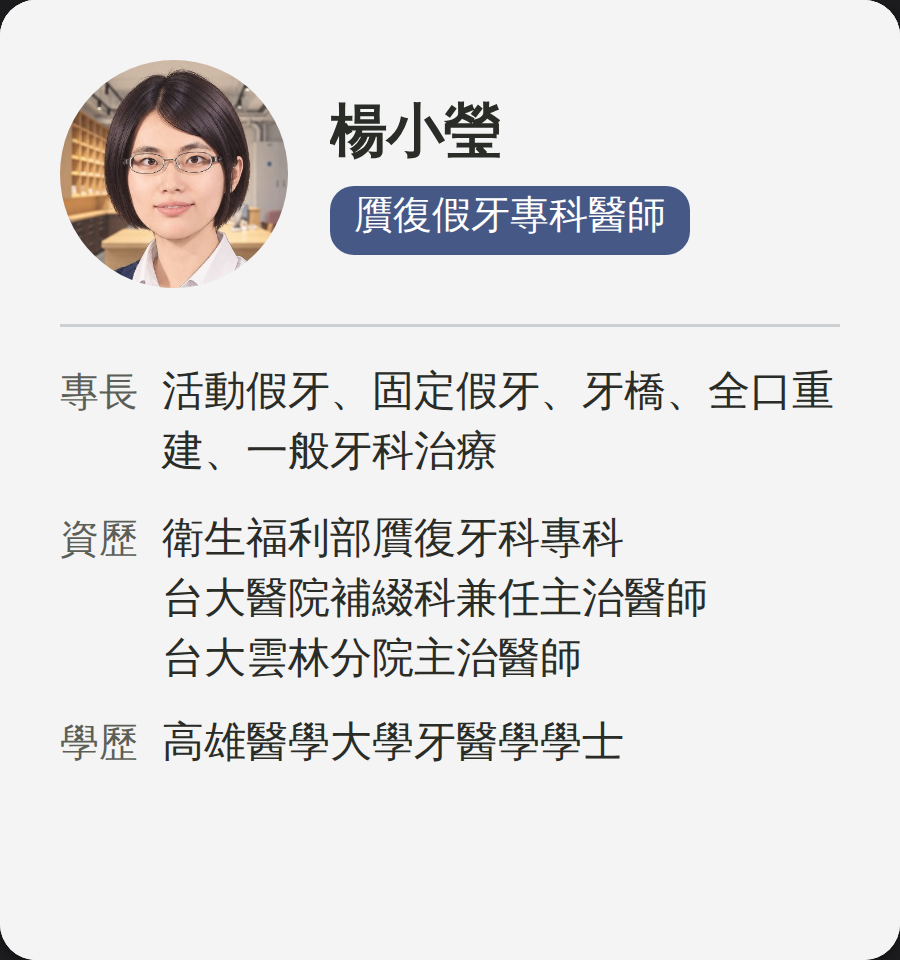
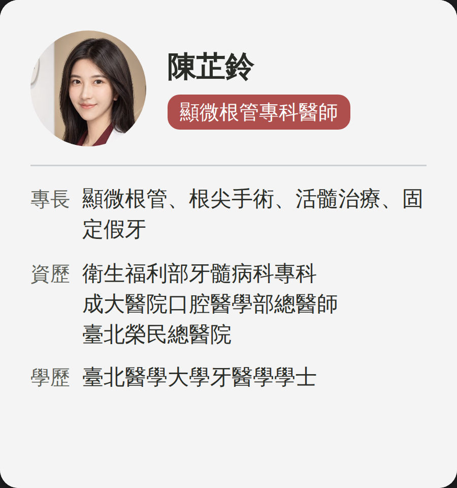
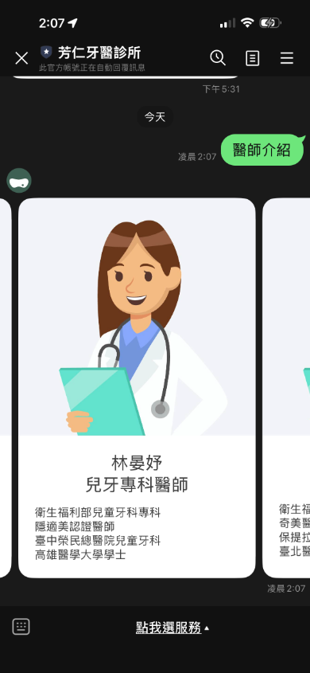

LINE「醫師介紹」改版預覽
圖文選單「醫師介紹」點下去回的那組卡。照片改成網站那顆 76px 的小圓，九位的文字全部從網站讀出來。
| 項次 | 問題 | 狀態 |
|---|---|---|
| 1 | 插畫太大，佔卡片六成高度 | ✅ 已改 |
| 2 | 插畫不是醫師本人，而且九位共用兩張 | ✅ 已改 |
| 3 | 廖立揚醫師還沒有照片 | ✅ 同網站，純文字 |
| 4 | 換上 LINE 要誰動手 | 待使用者確認 |
新版（左右滑，共九張）









← 左右滑 → 順序同網站
模擬圖：照 Flex JSON 畫的，實際樣子以 LINE 顯示為準。
現況（對照）


逐項
1 插畫太大
- 問題
- 插畫佔卡片高度約 62%，名字與資歷被擠到最下面。
- 事件
- 網站已經用 76px 的小圓頭像解決過同一件事。
- 解決方案
- 拿掉大圖；頭像 76px 放左上，名字與專科標籤放右邊。卡高 320px，資料從頂端就開始。
2 插畫不是醫師本人
- 問題
- 男女各一張通用插畫，九位共用。
- 事件
- 網站上八位已經有本人的形象照（林晏妤、許馨文 9/24 補上）。
- 解決方案
- 直接用網站那八張照片（fangren.net 上的 JPEG），專科標籤用網站同一顆科別色。
3 廖立揚醫師沒有照片
- 問題
- 廖立揚醫師沒有照片。
- 事件
- 網站上這一張是純文字卡（照片 9/23 依要求移除）。
- 解決方案
- 同網站，不補插畫、不放佔位圖。之後照片上了網站，重跑一次產生器就會跟上。
4 換上 LINE 要誰動手
- 問題
- 現在這組卡不是我們做的，不確定是哪一個後台產的。
- 事件
- 新版已經是可以直接貼的 Flex Message JSON（16.1 KB，上限 50 KB）。
- 解決方案
- 待使用者確認：定案後是自己貼進 LINE 後台，還是交給廠商換。